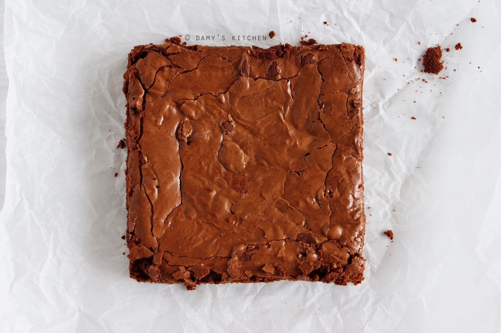

Brownie

Description
This is the best brownie recipe I have tried so far. I took this recipe from
Damy's Kitchen
and made some changes according to my taste
Ingredients
- 290 gr bitter chocolate (broken to little pieces)
- 90 gr butter
- 3 eggs
- 150 gr sugar
- 1 tea spoon vanilla extract (optional)
- A pinch of salt
- 140 gr water
- A pack of white chocolate (broken as your preference)
Steps
- Preheat your owen to 150 degree celsius.
- Take a 20x20cm square mold or heat resistant bowl and grease the bottom and sides of it
with a little soft butter and put a greaseproof paper in it.
- Melt the butter in a proper saucepan, take it of the heat, add the chocolates and stir with
a spatula until the chocolate melts. (Alternatively you can do this in the microwave by
taken it out and mixing it once in a while).
- Beat eggs, sugar and vanilla in mixer bowl.
- Continue whisking by slowly pouring melted butter chocolate into it.
- Add the flour, salt and white chocolate as well and beat just until mixed.
- Pour the mixture into your square mold and bake in the oven for about 35 - 40 minutes.
(If the consistency you like in brownie is more runny, then you can reduce your cooking
time to 30 minutes.)
- Take it out and let it cool.